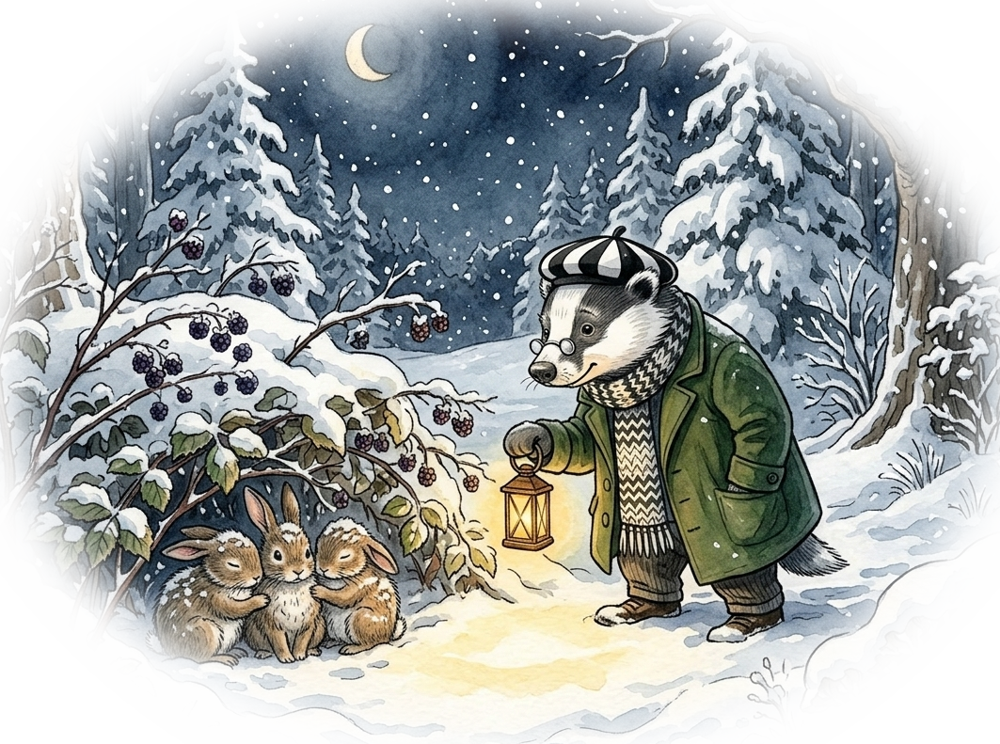
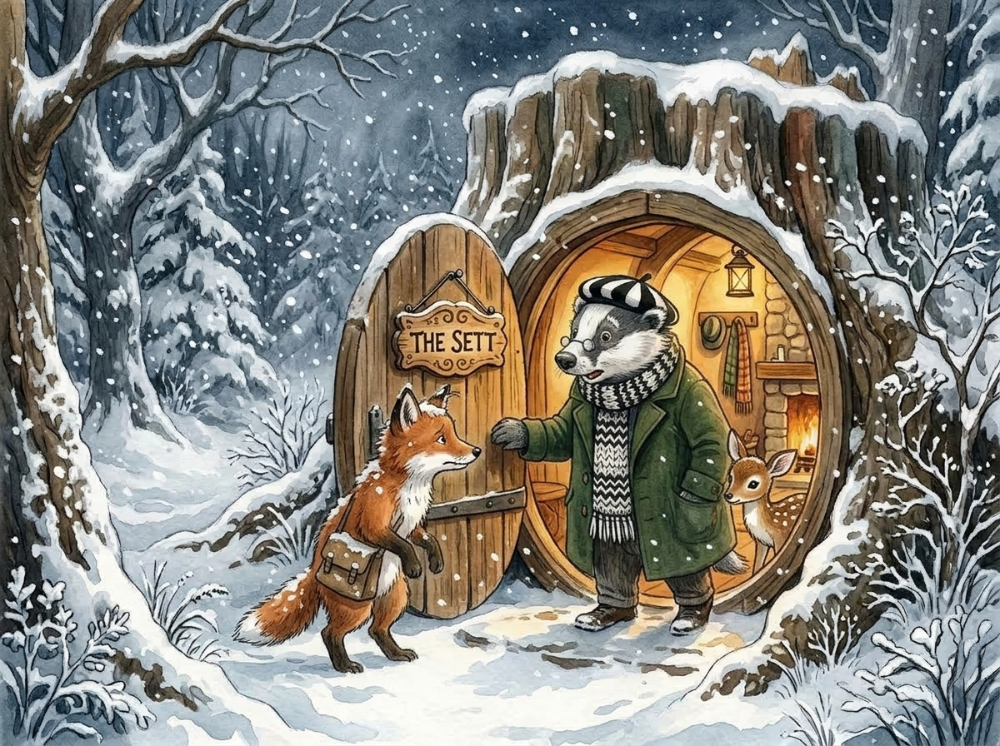

Mr Brock, the badger looked out of his front door at the gathering storm. The snow was swirling round and beginning to drift, getting deeper by the moment. He closed the door and retreated deep into his home.
"It’s not looking too good Mrs Brock," he said to his wife. "We’ll need to build up the fire and snuggle down for the night."
"You’ll also need to keep a watch for any lost souls out in the weather Brock," she replied.
"Surely nobody would be out on a night like this would they?" he pondered but he decided to keep a careful eye out anyway.
Mr and Mrs Brock were very happy living in their home. Their children had all grown and moved away. Just far enough to fend for themselves but not so close that they were on top of their parents. The Brocks' home was underground, deep enough so the frost didn’t penetrate and it had a nice wooden door in the stump of an old tree. Above the door was a sign that said ‘The Sett’, which is what most badgers call their home.
The old tree was in a clearing in the woodland, normally covered in soft leaves but now getting a deeper and deeper carpet of snow.
Mr Brock had spent part of the summer gathering wood from the surrounding woods. Dragging fallen branches back to the sett so they had lots of firewood to keep themselves warm all winter. Their home was warm and cosy.
Although he was a kindly old badger Mr Brock knew he had a reputation for being gruff and a little anti-social. All the woodland animals kept their distance because, it was whispered, Mr Brock could be very fierce when he was upset.
"I wonder…" Mr Brock asked his wife "if it’s worth taking a quick stroll around the clearing to make sure everything is alright."
Mrs Brock smiled to herself. Brock really was an old softie.
As he walked back along the passage, Mr Brock put on his scarf that hung on a hook by the front door and pulled on his black and white beret. In truth, the beret matched the colours of his head so closely it was almost indistinguishable but it did keep him warm, and secretly Mr Brock thought it made him look jaunty.
He closed the door behind him and sniffed the air. Definitely going to get worse tonight he thought. He listened to the night, all sounds muffled by the quiet snow. Nothing was moving. The world was still.
He quietly started to pace around the perimeter of the clearing, stopping every now and then to sniff the earth and the air. On the far side of the clearing he stopped.
Something... he thought something is nearby.
He stood motionless, surveying the scene, listening, sniffing, all of his senses alert. And then he heard a small voice… and the chattering of teeth.
"Don’t worry David…" a voice barely above a whisper "we’ll rest for a little while and then we’ll make our way home."
Mr Brock moved slowly and deliberately, anxious not to cause alarm. Under a blackberry bush he could see a shape covered in snow. The source of the voice, and the chattering teeth.
"Hello," he said softly "is everything alright?"
At that moment the chatting stopped and the mound was still. Slowly, very slowly, the mound grew until a head popped up. It was a young rabbit.
"I’m sorry if we’re on your property sir. My brother and sister and I are just trying to get home but we had to stop to rest."
"Why aren’t you already at home?" Mr Brock enquired.
"We were playing in the woods and lost track of time. When it started to snow we set off but it was so cold and deep, we had to stop to rest."
"Well you’re a silly bunch of rabbits aren’t you. You need to learn how to read the weather. You must listen to your mother better. I’m sure she has told you before."
"Possibly, but we were having so much fun in the woods…" the young rabbit tailed off but he knew they had been told of the perils of the snow.
"Come with me. There’s a warm fire and you’ll be nice and dry."
At once there were three young rabbits shaking themselves off and shivering with the cold.

"Come along," called Mr Brock as he crossed the clearing back to his home. The three rabbits followed him closely, keen not to get left behind.
As he ushered them into the front door he told them to hang up their jackets on the hooks and make their way along the passage. They could feel the warmth coming from the fire.
"These three young things need some hot chocolate Mrs Brock so we can get them warm inside and out."
"Well who have we got here?" Mrs Brock replied.
"My name is Peter…" said the first rabbit "and this is my brother David and my sister Daisy."
It is a little known fact that all rabbit families have a son called Peter, and this one appeared to be their spokesman.
"Thank you very much for helping us but our mother will be so worried," Peter frowned "once I’ve warmed up I will go back out and tell her we’re all safe… if you don’t mind them staying till the snow lessens."
Mr Brock let out a harrumph and said, "Let’s wait and see once you're warm."
"It’s not too far, we live about three clearings away. By the big rock and the fallen oak tree."
Mr Brock did know the clearing and he didn’t think it was a suitable journey for the young rabbit. Before he could speak however there was a gentle tapping at the door.
Along the passageway again with Mr Brock thinking who on earth is out tonight?
As he opened the door a flurry of snow whirled around and standing before him was a red squirrel.
"I’m sorry to disturb you Mr Brock…" the small squirrel sounded nervous "but my brother and I are trapped in the snowstorm and can’t get home. I saw you were kind to those rabbits and I hoped you might let us share your fire too."
"Well you’re a very polite young squirrel but…" Mr Brock looked all around the doorway "where’s your brother?"
As he spoke a small red head with long tufty ears popped down from above the porch. He looked at Mr Brock, upside down, and said "I’m here but I hid because I was so afraid you would chase us off."
"Nobody would get chased off on a night like this," said Mr Brock kindly and waved them past.
Just as he was closing the door he noticed a mouse. "Could I come too," he said "I’ve lost my way in the snowdrifts."
Pulling the door wider Mr Brock gestured the mouse inside. "Hurry down to the fire all of you. You can get nice and warm."
"Mrs Brock…" he called "we need more hot chocolate!"
Mrs Brock was in her element, fussing over all the young animals. She was dispensing blankets and hot chocolate, while silently calculating how many muffins she had in the cupboard for toasting later.
Suddenly Peter’s ears twitched. Like all rabbits, his hearing was highly sensitive.
"Mr Brock…" he said respectfully "I think someone is outside."
"Well I’ll go and see young Peter. It seems we’ll have lots of visitors tonight."
Mr Brock walked up along the corridor leading to his front door. As he opened it there was a flurry of snow and a cold wind. Brrr… he thought It’s definitely getting worse.
He peered out into the cold night but could see nothing moving. As he was about to shut the door he glanced down at the porch floor and there, huddled in a corner was a small deer.
"Oh my word!" exclaimed the badger "come on in quickly before we both freeze solid. Why are you all alone on a night like this?"
"I was following my Mum home but I lost sight of her in the snow storm," the small deer replied.
"What’s your name?" asked Mr Brock.
"I’m Lily," she replied.
"Is your mother called Eleanor?" Mr Brock asked.
"Yes, we live quite near."
"I know your Mum, and where you live but you won’t be going home tonight. The storm is much too bad. Come on in and get warm by the fire."
As Mr Brock started to swing the door closed a voice spoke from the gloomy darkness.

"Mr Brock," it said.
"Who’s there?"
A figure stepped forward into the dim light of the hallway.
"It’s me, Bertie."
Bertie was a beautiful young fox. No longer a small cub but a long way from fully grown.
Lily gasped and jumped behind Mr Brock, looking furtively around him but almost fully hidden.
"I’m sorry to ask Mr Brock but, the storm is so bad and I can’t get home. I wondered if I sleep here in your porch until the storm is over?"
"Well young Bertie. We have quite a houseful tonight and some of them might be very frightened by sharing their space with a fox."
"I know…" said Bertie sadly "that’s why I’ll stay in the porch until the storm passes."
A voice spoke softly from behind Mr Brock. "But if you promised to be on your best behaviour and not eat anyone… maybe you could share the fire."
"Well Bertie," said the badger "this small deer is prepared to trust you just so that you can be warm and cosy with the rest of us. What do you think of that?"
"I don’t know what to say," said Bertie "yes, I promise to be well behaved and I certainly wouldn’t want to hurt anyone."
"Come on in quickly then so I can shut the door."
Mr Brock led them down the corridor with Lily leading the way and Bertie lagging behind slightly. He was nervous because he knew his whole family had a bad reputation.
There was a collective intake of breath as Bertie followed Mr Brock into the warm and cosy room. One of the rabbits stepped sideways behind a plump armchair but peeked out.
"Everyone can be calm," Mr Brock said "it’s a filthy night and I won’t allow anyone to be in peril because we wouldn’t take them in."
He went on to reassure everyone that Bertie, although a fox, had promised to be on his best behaviour and meant no harm to anyone. Despite the badger’s assurances all the other animals were wary of the young fox. They had all been warned by their mothers that foxes should be kept as far away as possible.
At that moment Mrs Brock arrived with a huge plate of toasted English muffins with lashings of creamy butter.
"Come along," she said "Bertie, you and Lily will be the coldest so move closer to the fire. Let’s get you dry and nice and warm."
There was a lot of shuffling about and everyone made room for the two new arrivals. Most gave the fox a wide berth but David, the rabbit, plonked himself down right next to Bertie. It earned him a glare from Peter, his older brother, and a shy smile from Bertie.
"We all need to get warm and dry on a night like this," said David as he passed a plate of muffins to Bertie "and this is an extra special night."
"Thank you…" Bertie replied "I don’t think I would have done well just sheltering in the porch. The snow is really getting deep."
Soon David and Bertie were deep in conversation about different places they knew in the woods and the best routes through. Max and Philip, the squirrel brothers, started joining in because they knew different routes as they were always high up in the trees.
Mr Brock went through into the kitchen where his wife was busy making an apple pie for later.
"There will be a lot of worried Mums in the forest tonight," he said.
Mrs Brock turned and smiled at him kindly. "You really are an old softie aren’t you?"
"Well… imagine how we would have felt when our lads were little."
"Alright, but you make sure you wrap up nice and warm. Wear your hat and I’ll make you some hot chocolate when you get home. And be careful. No heroics."
Mr Brock stood by the front door putting on his big coat, his scarf and his black and white beret.
"Why are you going out?" said a voice behind him. He turned and saw Bertie watching him. The young fox looked concerned.
"I’m just popping out to tell your mothers that you’re safe and warm and you’ll all be home in the morning or when the storm clears."
"But isn’t that dangerous?" Bertie persisted.
"I will be fine. I’m a lot more used to this type of weather than you young ones."
"I should come with you," Bertie started towards the front door.
"No, no…" Mr Brock smiled at him "I need to you to make sure those rabbits don’t drink all the hot chocolate so I can have some when I get back. Don’t worry, I will be back before you know it."
With a little wave Mr Brock stepped out and closed the door quickly behind him. Bertie sat on the rug, watching the back of the door as if willing Mr Brock a safe return.
The air was silent outside and Mr Brock took a moment to sniff deeply in all directions. He knew these woods intimately. He knew every tree, every clearing. He knew where the wild daffodils grew in Spring and where the bluebells turned the woodland floor into a blue carpeted heaven, warmed by the late spring sunshine, dappled by the bigger trees.
He worked out a route in his mind trying to minimise his journey but making sure he could reach each of the homes of his temporary family.
"Hmmm…" he said out loud to nobody "it’s close to the road. I’ll need to be especially careful tonight."
All the animals in the forest knew of the road. It was feared and usually avoided. Cars drove too fast and had no regard for those living alongside in the forest.
As he set off Mr Brock knew the snow was getting worse. I should have left earlier he thought.
Trudging through the deep drifts with a blizzard of fresh snow still falling Mr Brock made steady, but slow, progress. His first port of call was at the squirrel brothers house and he could see their mother with her head poking out of a window scanning the tree tops looking for their return.
He called out and told her they were safe and well but he thought it was safer if they returned after the storm. She was so grateful for the news and would have invited Mr Brock into their home to warm up but the badger was much too big for their warm and cosy nest.
By coincidence Mrs Mouse lived in the base of the very next tree so Mr Brock was able to deliver the news to her very quickly. Her son Terry was tucked up safely and would be back in the morning or when the storm passed.
Mrs Mouse offered to give the badger some food to cover her son’s overnight stay but Mr Brock assured her they had plenty of food stored up and even a gang of young ones would get through it all.
Come along Brock thought Mr Brock the sooner you get done, the sooner you can put your feet up in front on the fire and enjoy your hot chocolate. He smiled to himself because he knew that hot chocolate was his greatest pleasure. As I’m sure it is for everyone he told himself.
The rabbit family were next and again, he found Mr Rabbit standing on the threshold of their burrow looking out into the night. As Mr Brock started telling him what was happening Mrs Rabbit appeared too and was very grateful. They offered a hot drink and a warm by their fire but Mr Brock knew it would not do for him to get too comfortable.
Lily’s family lived nearby so that was an easy trip.
Just the Fox family left but Mr Brock paused for a moment. He must have unconsciously left it till last. He knew he had nothing to fear from the Foxes. Mr Brock was old and tough, he’s seen many a winter and seen off many a fox. If anything the Foxes were more wary of Mr Brock.
No, what gave Mr Brock a pause for thought was the road. The Fox family lived the other side of the road and Mr Brock would need to cross it twice if he was to get home safely. Undeterred he set off to a place where he knew the road was safer to cross.
As he got to the road Mr Brock took a moment to look around himself. He knew cars would have bright lights and, even on this murky, horrible night he would be able to see them in the distance. He looked both ways, back and forth, checking and double checking. He listened, because sometimes you could hear cars and motorbikes a long way off before you could even see them.
He sniffed the air. There was something on the air that he couldn’t place. Not really a forest scent but not a danger. Sometimes humans dropped rubbish from their cars, leaving an alien scent that didn’t belong. Food wrapped in plastic, cigarette ends, plastic bottles. These humans really don’t deserve the forest he told himself.
He decided to ignore the unaccustomed scent and double checked the road again before crossing safely. Always check and check again he thought.
The Fox family lived in a small clearing about two hundred yards from the road. The snow was deeper there and it was slow going for Mr Brock. As he trudged along he heard a voice from the side of the path.
"What do you want Mr Brock?". It was Mr Fox and he sounded somewhere between suspicious and worried.
Brock stopped and turned towards the hidden fox. "Your son Bertie got lost in the storm and ended up at my house. He’s quite safe till it passes but I knew you’d be worried about him."
"We have been," Mr Fox replied "but why would you take him in?"
"Don’t sound so suspicious Mr Fox. Look at this weather. Are you seriously telling me that, if my son turned up on your doorstep on this awful night, you would take him in?"
"And anyway…" the badger smiled as he continued "we have a house full tonight. Rabbits, squirrels, a deer and a mouse."
"and they have all accepted Bertie?" Mr Fox sounded amazed.
"Last I saw he was deep in conversation with a young rabbit next to a roaring fire. On nights like these we all need to help each other."
"Thank you Mr Brock. You really are a wise old badger."
"Old?" said Mr Brock with mock indignation "I’ll have you know I’m in the prime of life!"
Mr Fox invited Mr Brock into their home. It was warm and cosy and the badger could feel his toes unfreezing. He had just decided he’d better not stay, in case he got too comfortable when Mrs Fox appeared carrying a warm blackberry pie with a big jug of creamy custard.
Well, maybe one slice he thought just to warm me up.
Before too long, after two slices of pie and a cup of hot tea, Mr Brock put on his outdoor coat and beret and set off home. The whole Fox family came to the door to wave him off.
As he made his way back to the road Mr Brock thought how much he loved the forest and all the woodland creatures. Yes, they had their disagreements but they also looked out for each other.
Back at the road, Mr Brock did his previous routine of watching for lights, listening and sniffing the air. There it was again, that scent that wasn’t really from the forest but wasn’t human either.
Once he was satisfied it was safe, he crossed quickly. It didn’t do to dawdle on the road. The scent was stronger the other side. Something buried in the badgers brain suddenly rushed to the front. It was a dog!
Mr Brock was on high alert. He knew humans sometimes trained dogs to hunt and kill badgers so he was extremely cautious. But… this didn’t seem like a strong dog smell, maybe not a full grown dog.
Brock moved slowly along the side of the road, sniffing and listening intently. Then he actually heard the sound of shivering. That doesn’t sound good he thought.
He snuffled into a snow drift that had formed under a road sign and, buried out of sight, he found a small dog. Not a puppy he thought but definitely not an adult, maybe a few months old he decided. Mr Brock had seen lots of dogs being walked by humans in the woods so he knew that this was what the humans called a Labrador. It’s pale blond fur was caked in snow and it’s eyes were closed.
"Hello…" he said gently "Are you awake?"
The dog’s eyes shot open in fear as the large badger stood over him.
"Don’t worry," Mr Brock said in a calm soothing voice "what’s your name?"
The dog started to move gently and replied politely "My name is Charlie, pleased to meet you sir."
Mr Brock smiled at the young lad’s manners. Obviously a well brought up chap.
"Now Charlie, we can’t have you right next to the road because it’s dangerous. So, follow me, there’s a small clear space about 30 feet away and I can have a good look at you."
He used his powerful claws to dig Charlie out of the snow drift and guided him away from the road. Just a few feet away, the path opened out slightly and Mr Brock took in the full picture. Charlie looked in a bad way but not life threatening. He took off his scarf and wrapped it around Charlie’s neck. Then he took off his thick winter coat and put it over the dog and buttoned in under him.
He took a half step back and looked at the bedraggled dog. The coat was much too big for Charlie and dragged on the ground. A thought occurred to him and he reached into the coat pocket and pulled out a belt, which he secured around Charlie’s middle to pull the coat up tight.
"Perfect," he told Charlie and then he took off his prized beret and put it on Charlie’s head, covering his ears and almost his eyes too.
"That should warm you up a little bit lad. We need to walk for about 15 minutes I’m afraid but when we get there, you’ll have some lovely apple pie and custard and there’s a roaring log fire. Can you do that?"
"I think so…" Charlie nervously replied, at least he had stopped shivering so much, "but the snow is very deep."
"I’ll carve a way through and you stay right in my footsteps. If you fall behind, just shout and I’ll come back and get you."
They set off into the woods. Mr Brock knew it was only a ten minute walk for him but he allowed some extra time. It turned out Charlie was a determined little dog, very tired but determined. He kept up with the badger the whole way and Mr Brock was pleased to see him every time he looked back to check.
They arrived at "The Sett" shortly and Brock took a moment to look all around and sniff the air. It’s getting worse he thought but it’ll blow over in the morning.
"Before we go inside Charlie I have to tell you that there are a lot of young chaps in there sheltering from the storm. It’s important everyone gets on well together and there is no squabbling."
"I’m too tired for squabbling… and too grateful you found me."
"Come on," said Mr Brock "let’s get you inside."
Mrs Brock came along the hallway just as her husband was taking his coat and scarf off Charlie.
"Oh my word," she exclaimed "another refugee and you have been outside with your coat on. Come inside quickly and get by the fire."
All the young animals made way for the new arrivals so they could get close to the fire on the comfy armchairs. Bertie the fox put another log carefully onto the fire and it was soon blazing.
All the animals stared unashamedly at Charlie. They all knew dogs of course but they had never been this close up to one before.
"Why are you out in the woods? Don’t dogs live in houses with humans?" David the rabbit asked. His sister Daisy poked him in the ribs for asking a rude question but Charlie didn’t mind.
"I’m not sure to be honest. I was a Christmas present for a little girl and at first I really missed my Mum, but the little girl played with me lots and we had fun. But after a few weeks the little girl didn’t want to play as much and didn’t like taking me for walks any more. Her Mum and Dad kept telling her off for not cleaning up any mess and not taking me into the garden and that made her even worse. It was like she was just bored of me."
All the other animals listened intently. They didn’t really know how human families worked but this didn’t sound like their own family lives.
"And then, this evening, there was a lot of shouting. A really big argument and the man took me out in his car. He stopped in the woods and opened the door. I thought he was taking me for a walk so I got out and then he drove off and left me by the side of the road."
There was a gasp from the others because everyone knew the road was dangerous.
"I waited for him to come back but… he didn’t. A few cars went past and they were so fast and so close. A big lorry almost hit me so I moved closer to the big sign. I was too scared of the forest on my own but I was really scared of the road as well."
Bertie got up and squeezed into the armchair next to Charlie.
"And now you’re safe, with friends," he said quietly and everyone else nodded.
"Safe, and with apple pie," announced Mrs Brock as she entered the room. She looked across at Mr Brock and he was ‘resting his eyes’. Bless him she thought he’s a lovely old sweetheart.
With apple pie and custard dished up to everyone, Charlie joined Mr Brock in a short nap to recover, but in truth he was worried about his future. Had he been abandoned by that family? He could have been killed on the road… and then it dawned on him. He had been abandoned. He was left outside on a freezing night and either the fast cars or the weather might have been the end of him, if it wasn’t for the heroic Mr Brock.
Everyone gradually dozed off. Mrs Brock came in to clear plates and discovered that David the rabbit had squeezed between Charlie and Bertie with his head resting on Bertie’s lap. The squirrel brothers were each asleep on the arms of Mr Brock’s armchair and Lily the deer was tucked under the badger’s legs.
She couldn’t see Terry the mouse at first but then she spied him wrapped in Charlie’s tail.
They were all fast asleep.
"Well it’s been a long evening" she thought but she didn’t want them to sleep too long or they would sleep well tonight. "I’ll give them an hour and see if I can interest anyone in a midnight feast" she said out loud.
"Yes please," said Peter sleepily. He was curled up on the rug in front of the fire with his sister Daisy.
Later, as Mrs Brock brought in mugs of warm milk and slices of fruit cake for everyone, they all stretched and woke up. Mrs Brock told them it was a naughty treat because, although it was quite late in the evening, she wanted everyone to sleep well at night.
While they were eating, Max and Philip had some advice for Bertie.
"You know you should visit the houses on the edge of the wood don’t you?" Max told him.
"Why would I go there? There are humans and they don’t like foxes."
"No, that’s where you’re going wrong Bertie," Philip replied for his brother "the farmer doesn’t like you because you steal his chickens to eat them. The people in the houses have so much food they throw lots away."
"And in their gardens they leave nuts and seeds on a big platform for us and the birds," Max joined back in.
"We’ve been there too," chimed in Peter, the rabbit "they grow the most delicious lettuce but we have to be fair and not take too much."
"I don’t really eat nuts and lettuce though," said Bertie.
"That’s the beauty of the houses," Max said "they have something called a dustbin and it is full of food. There’s cooked chicken and beef, spaghetti and…."
"What’s spaghetti?" asked Bertie.
"I have no idea," laughed Max "but it seems very popular with humans."
"The best thing is that those houses are down a little lane, a very long way from the busy road," David was keen to show he was just as knowledgeable.
"and of course, if you had lots of food from the houses, you wouldn’t need to hunt… other woodland folk and we could all be friends."
There were lots of nods around the fireside but then Charlie spoke up.
"I think I’ll need those dustbins too because I’ve been abandoned by my family."
"Haha, we have a plan for you too!" Max and Philip spoke almost together.
"From up in the trees we have a great view of the woods," Philip said.
"and every day we used to see a young boy walking his dog, rain or shine," Max took over.
"the dog was a very old gentleman but the boy really loved him, you could tell," Philip and Max were now ping-ponging between themselves to tell the tale.
"but now, the boy only walks with his Mum on Saturday and Sunday, so we think his old dog has died."
"But imagine if they were walking through the woods and a dog just happened to be waiting out on the path for them."
All the animals were sitting up now, listening carefully to the plan to find Charlie a new home.
"They would fall in love with you Charlie, you would fall in love with them and you’d get a new home!"
"But what if they don’t want me?" Charlie asked sadly.
"Stuff and nonsense," said Lily "how could they not love you?"
"Absolutely," Max responded "and you know what day it is tomorrow don’t you?"
"But…"
"No buts Charlie. Trust us, they will love you."
"and on that note," Mr Brock said smiling "we all need to get some sleep ready for the big day."
Everybody got up and took their plates and cups into the kitchen but Mrs Brock bustled everyone back out refusing all offers of help. Mr Brock added some logs to the fire so it wouldn’t go out overnight and gave blankets and pillows to everyone who needed them.
After washing up Mrs Brock went back into the sitting room and could tell that everyone was already asleep. Bertie the fox was on his side curled up and David the rabbit was next to him resting his head on Bertie’s tummy.
"The world can be a nice place," she whispered to herself. She went into their bedroom and got into bed next to her husband. She kissed him on the nose while he quietly snored. It had been quite a day for Mr Brock too she thought. Let’s hope tomorrow will be a success.
The next morning everyone slept a little late, including Mr Brock. There were big bowls of porridge for everyone. It would help fend off the cold although the deep snow was already melting.
Lily, perhaps the stealthiest woodland animal, went along the path to where the squirrels had said the humans would walk. She kept silent watch. All the other animals took up positions hidden in the undergrowth. Charlie sat in the middle of the path looking, and feeling quite sad.
Suddenly Lily appeared from nowhere. "They’re coming," she whispered.
Charlie looked around and saw a woman and her young son walking towards him. He was older than the girl from his last house and he was chatting happily to his mother. Charlie didn’t know whether to face them or face away. Should he stand? Or sit? Or lie down?
He was so nervous, he decided to sit.
The boy stopped dead in his tracks while his mother continued walking and talking. She stopped too and faced him. "Are you OK?" she asked him but her son just pointed.
They both looked at Charlie. Charlie looked back at them both. Charlie knew instantly that these were kind people.
"Do you think he’s lost?" the boy asked his Mum.
"He looks a bit bedraggled Alex. Maybe he’s been out all night."
"Maybe he’s been abandoned," said Alex, already hoping he had.
Yes, I have been thought Charlie and he let out a small affirmative woof.
The boy, Alex, knelt down next to Charlie and put out a hand, palm down, fingers slightly bent. It was just close enough to be a welcoming gesture but not a threat. Charlie understood and nuzzled the hand and then gently licked it.
Both Charlie and Alex melted towards each other and the boy put his arm around Charlie’s neck and hugged him tight.
"Mum?" Alex started.
"I know what you’re thinking Alex but don’t get your hopes up too much. The chances are he’s just someone’s lost pet."
"I know but can we take him home and see what happens?"
The woman looked at her son and the dog. They already looked devoted to each other. Bonded like Super-Glue in less than a minute.
"There could be someone looking for him in the woods right now Alex. Or he could be chipped."
I’m not chipped Charlie shouted in his mind they were always too busy to organise it.
"OK but, if we walk him the rest of the way home we can see if there is anyone looking for him. Then we can take him to the vet to get his checked over and to see if he’s got a microchip… and then."
"And then…" his Mum replied "we’ll need to put up posters on lampposts and on trees in the woods, just in case he belongs to someone who misses him."
"And then…" Alex was beaming like a lighthouse.
"And then… we’ll see."
Like most kids, Alex knew ‘we’ll see’ usually meant yes. He reached deep into his overcoat pocket and pulled out a collar and lead.
"This belonged to my friend Bruno. He died sadly, but he had a lovely life with us. I hope you will too."
You don’t need a lead thought Charlie I would follow you anywhere.
As the three of them walked off Alex asked his Mum "What do you think his name is?"
"I don’t know. What do you think he looks like?" she replied.
"Billy? Woody? I don’t know."
Charlie shouted Charlie in his mind and at that moment there was a loud noise from the woods. A mixture of barking, squeaking and chittering as all the animals shouted Charlie out loud.
Alex stopped and looked around him but there was nobody to see. He looked down carefully at the dog.
"Charlie," he said to his Mum. "He looks just like a Charlie."
Several weeks went past. The vet confirmed Charlie was in good health but didn’t have any identifying microchip. Nobody responded to lost dog posters all through the woods. Maybe the first family saw them but were too ashamed to reply.
Charlie had his final jabs and the vet told Alex that he thought they had done everything possible to locate Charlie’s original owners. He told Alex that he had microchipped Charlie and registered him as Charlie’s owner. Alex wasn’t ashamed to cry a little as he hugged Charlie.
For his part Charlie wasn’t idle. It turned out that Alex lived in one of the big houses down the lane and backing on to the woods. Alex’s parents thought it was adorable that Charlie could open a kitchen cupboard and carry a bag of squirrel food into the garden before leaving it at the post of the feed table. In a quiet part of the garden, behind some shrubs, he had dug a hole under the fence allowing access for rabbits to enjoy the vegetable garden.
All the family was entranced when, just as the sun was going down, Lily appeared in their garden. She quietly munched on some grass and some lettuce before disappearing back into the shrubbery.
It was a magical moment.
Charlie was also known to discreetly push over a dustbin at night just before bedtime. He’s never been told, but he felt his family expected him to chase off any fox visitors, so Bertie would wait in the bushes until Charlie came out and they would sit together passing the time of day and discussing news from the woods.
Charlie and Alex would walk in the woods twice a day, before and after school. Alex was used to Charlie disappearing for a few minutes. He made up a story of Charlie the fearless hunter, stalking the wildlife in the forest.
In fact, Charlie popped in to see Mr & Mrs Brock for a quick cup of tea and a slice of cake. Charlie was eternally grateful to them for saving him that night and paving the way for his really happy life.
Sometimes Alex would notice cake crumbs on Charlie’s mouth but he always assumed his friend had mugged some poor picnickers.
Charlie followed Alex everywhere, he even slept on Alex’s bed. Every day, at precisely the time Alex was leaving school to come home, Charlie would shake himself and go and lie by the front door.
They were firm friends and both of them were very pleased about that.
The End